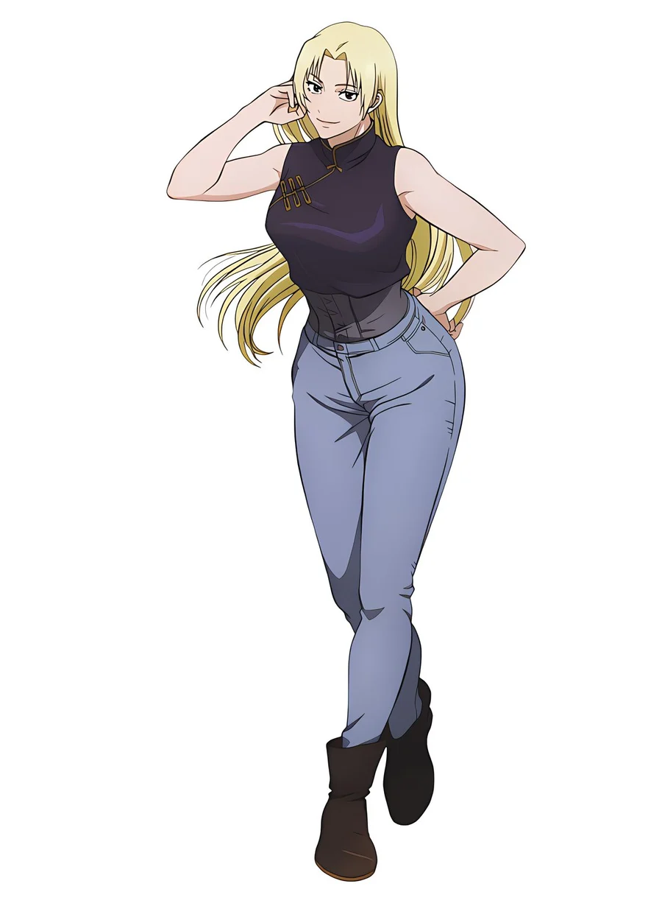

Ta guide
Salut, je suis Yuki.
Je t'accompagne à chaque étape : comprendre le site, tirer tes cartes, bien faire les exercices et suivre tes progrès. Sans pression.
Comment ça marche
Cinq étapes simples.
Découvre le site
Six espaces : guide, programmes, Gacha Box, progression, niveau et communauté. Tout est accessible depuis le menu.
Comprends le tirage quotidien
Chaque jour, tu tires quatre cartes. Une carte classique contient un exercice ; une carte Combo en enchaîne plusieurs dans un ordre précis et ne prend qu'un seul emplacement.
Réalise bien chaque exercice
Chaque fiche explique la posture, avec une variante plus facile et une variante plus avancée. Choisis celle qui te convient aujourd'hui.
Suis ta progression
Chaque séance rapporte de l'XP et des flammes. Ton niveau monte avec la régularité, pas avec l'épuisement.
Relève les défis
Des défis hebdomadaires et des badges marquent tes étapes. Un jour de repos fait aussi partie du programme.
Les conseils de Yuki
Avant chaque séance
- Échauffe-toi 3 à 5 minutes (mobilité douce, marche sur place).
- Bois de l'eau et porte des vêtements confortables.
- Garde le dos neutre, respire sans bloquer ta respiration.
- Arrête-toi si tu ressens une douleur vive, et demande conseil à un professionnel.
Les exercices renforcent des muscles. Ils ne font pas disparaître la graisse d'une zone précise, et ce n'est pas leur but : l'objectif est de te sentir plus forte et plus à l'aise.
